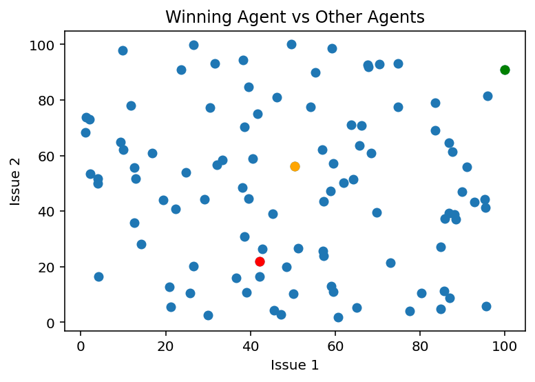
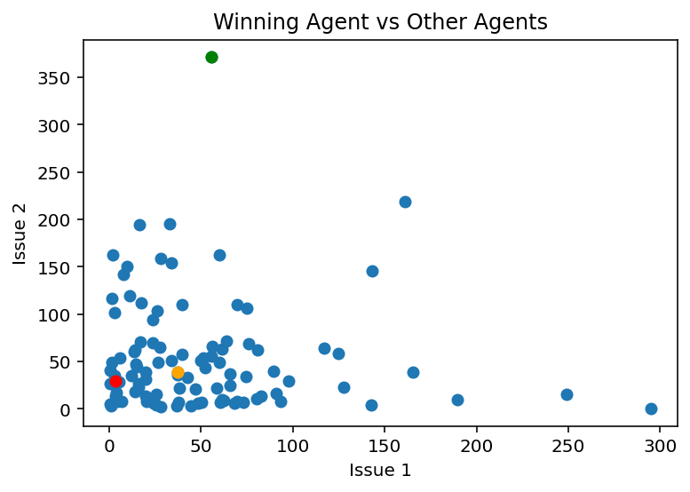
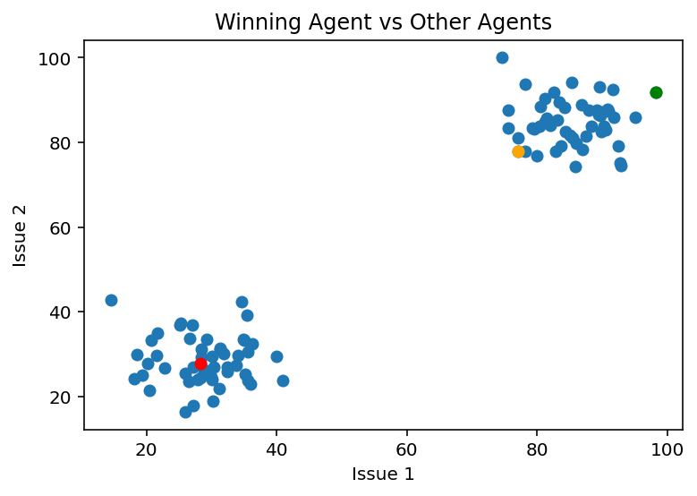
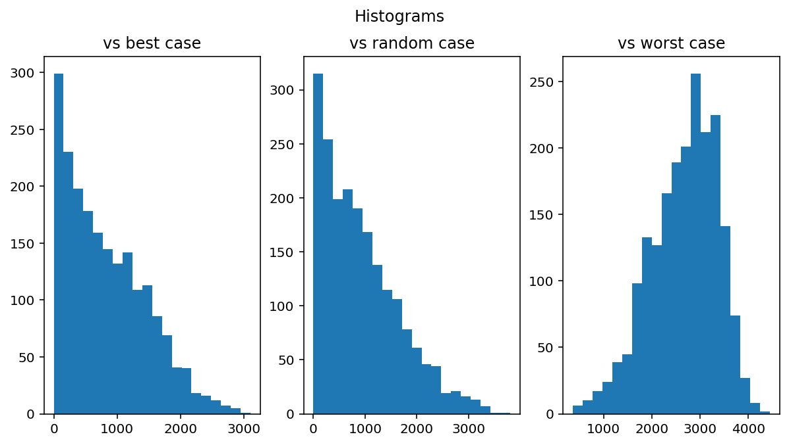

This model was designed to test whether a diverse group of agents can select a leader who best represents their preferences on issues. In order to facilitate the decision-making process, we develop a multiple round election process similar to a French-style presidental election. Agents are able to vote for any other agent than themselves to represent them. Based on the results from the first election, a set of candidates advance to a second round for a run-off to represent the entire group. If there is still a tie in the second round, we hold a third round. This process continues until a single agent is selected, who becomes the representative of the entire population.
Our model consists of 101 agents (to prevent ties) endowed with two values between 1 and 100 that represent two preferences on issues (e.g. gun control; health care). We drew these values from distributions that were uniform, exponential, and bimodal. Agents then go through the multiple rounds of voting. In the first round, each agent votes for the agent closest to them on the two issues in euclidean distance. The result is typically a widely dispersed distrubtion of votes, with many agents being tied for the most votes.
In subsequent rounds, agents vote for the agent closest to them on the two issues in euclidean distance among the winners of the previous round. This was the “best-case” simulation in which agents select the agent who best represents their preferences given the constraint of having to vote for previous winners in rounds following the first round. We also ran a “worst-case” simulation in which agents selected the agent furthest from them in issue preference each round, and a simulation in which agents selected a random agent each round.
Demonstration of voting process
First, we demonstrate the results of a single election. Each agent is represented as a dot in the scatterplot, with its x and y coordinates determined by their placement in the preference spaces. The winner of the election is represented by a red dot, the agent with the lowest euclidean distance from all other agents is represented by an orange dot, and the agent with the highest euclidean distance from all other agents is represented by a green dot. The following three graphs each have preferences drawn from different distributions: the first is drawn from a uniform distribution, the second from an exponential distribution, and the third from a bimodal distribution.
Code
import numpy as np from scipy.spatial import distancefrom scipy.stats import ttest_indimport matplotlib.pyplot as pltimport randomuniform = np.random.uniform(1, 100, (101, 2)) exponential = np.random.exponential(50, (100, 2))bimodal = np.concatenate([np.random.normal(25, 5, (50, 2)), np.random.normal(75, 5, (50, 2))])# Scale and shift the values to the range [1, 100]bimodal =1+ (bimodal / np.max(bimodal)) *99for agent_values in [uniform, exponential, bimodal] : total_distances = np.sum(distance.cdist(agent_values, agent_values, 'euclidean'), axis=1)# Find the index of the agent with the smallest total distance smallest_distance_index = np.argmin(total_distances) largest_distance_index = np.argmax(total_distances) random_distance_index = random.randint(0, 100)# Initialize an empty list for vote counts vote_counts = [0] *101# Iterate over all agents for i, agent_value inenumerate(agent_values): distances = distance.cdist(agent_values, [agent_value], 'euclidean').flatten() distances[i] = np.inf closest_indices = np.where(distances == np.min(distances))[0] # Randomly select one of the closest (should be rare case) selected_index = np.random.choice(closest_indices) vote_counts[selected_index] +=1# vote max_votes =max(vote_counts) most_voted_agents = [i+1for i, count inenumerate(vote_counts) if count == max_votes] most_voted_agents = [x -1for x in most_voted_agents]# If multiple agents have max votes, run another round of voting among themwhilelen(most_voted_agents) >1:# Reset vote counts vote_counts = [0] *101for i, agent_value inenumerate(agent_values): distances = distance.cdist(agent_values[most_voted_agents], [agent_value], 'euclidean').flatten() closest_indices = np.where(distances == np.min(distances))[0]# Randomly select one of the closest selected_index = np.random.choice(closest_indices) vote_counts[most_voted_agents[selected_index]] +=1# vote max_votes =max(vote_counts) most_voted_agents = [i+1for i, count inenumerate(vote_counts) if count == max_votes] most_voted_agents = [x -1for x in most_voted_agents]# Extract the 2-dimensional values for all agents x_values, y_values = agent_values[:, 0], agent_values[:, 1]# Plot all agents in a 2D scatter plot plt.scatter(x_values, y_values) plt.scatter(*agent_values[most_voted_agents[0], :], color='red') plt.scatter(*agent_values[smallest_distance_index, :], color='orange') plt.scatter(*agent_values[largest_distance_index, :], color='green') plt.xlabel('Issue 1') plt.ylabel('Issue 2') plt.title('Winning Agent vs Other Agents') plt.show()



In most cases, the winning agent (red) is not the same as the agent with the shortest euclidean distance from all other agents (orange). The difference indicates the influence of the institutional effects of the voting process compared to a “best case” scenario.
Determining acceptability of voting process
Frequently the winning agent was not the agent with the lowest euclidian distance from all agents. To determine whether this election structure generally results in better than random selection, we examined the difference in euclidean distance from all other agents between the winner of the election and the agent with the actual lowest euclidean distance (the “best case” candidate). This was designed to represent how far the winner of the multiple election process was from all other agents’ preferences compared to the agent who was actually closest in issue preference to all other agents. The “best-case” scenario performed better than the random scenario, with the p-value approaching zero as we increased the number of simulations. The average difference between the election winner and the agent with the lowest euclidean distance in the uniform distribution condition was 861 out of a total possible difference of 14,100. These results suggest that there is a value gained for agents by voting for the agent closest to them in issue preference, and that there is not much value lost in having multiple rounds of voting compared to initially selecting the agent with the lowest euclidean distance, but that the winner will still usually differ from the “ideal” candidate.
Code
import numpy as np from scipy.spatial import distancefrom scipy.stats import ttest_indimport matplotlib.pyplot as pltimport randomdifference_from_best = []difference_from_worst = []difference_from_random = []for n inrange(2000): agent_values = np.random.uniform(1, 100, (101, 2)) total_distances = np.sum(distance.cdist(agent_values, agent_values, 'euclidean'), axis=1)# Find the index of the agent with the smallest total distance smallest_distance_index = np.argmin(total_distances) largest_distance_index = np.argmax(total_distances) random_distance_index = random.randint(0, 100)# Initialize an empty list for vote counts vote_counts = [0] *101# Iterate over all agents for i, agent_value inenumerate(agent_values): distances = distance.cdist(agent_values, [agent_value], 'euclidean').flatten() distances[i] = np.inf closest_indices = np.where(distances == np.min(distances))[0] # Randomly select one of the closest (should be rare case) selected_index = np.random.choice(closest_indices) vote_counts[selected_index] +=1# vote max_votes =max(vote_counts) most_voted_agents = [i+1for i, count inenumerate(vote_counts) if count == max_votes] most_voted_agents = [x -1for x in most_voted_agents]# If multiple agents have max votes, run another round of voting among themwhilelen(most_voted_agents) >1:# Reset vote counts vote_counts = [0] *101for i, agent_value inenumerate(agent_values): distances = distance.cdist(agent_values[most_voted_agents], [agent_value], 'euclidean').flatten() closest_indices = np.where(distances == np.min(distances))[0]# Randomly select one of the closest selected_index = np.random.choice(closest_indices) vote_counts[most_voted_agents[selected_index]] +=1# vote max_votes =max(vote_counts) most_voted_agents = [i+1for i, count inenumerate(vote_counts) if count == max_votes] most_voted_agents = [x -1for x in most_voted_agents] winning_agent = np.argmax(vote_counts) winning_distance = np.sum(distance.cdist(agent_values, [agent_values[winning_agent]], 'euclidean')) difference_from_best.append(np.abs(winning_distance - total_distances[smallest_distance_index])) difference_from_worst.append(np.abs(winning_distance - total_distances[largest_distance_index])) difference_from_random.append(np.abs(winning_distance - total_distances[random_distance_index]))fig, axs = plt.subplots(1, 3, figsize=(10, 5))axs[0].hist(difference_from_best, bins=20)axs[1].hist(difference_from_random, bins=20)axs[2].hist(difference_from_worst, bins=20)axs[0].set_title('vs best case')axs[1].set_title('vs random case')axs[2].set_title('vs worst case')fig.suptitle('Histograms')plt.show()

The histograms of the best case and random case differences from the winning agent look very similar. To determine whether or not we actually are preforming better than random selection, we implement a simple hypothesis test of the difference in means between the two distributions. The negative value of the difference indicates that the best case scenario is closer to the winning agent than the random case. The p-value is effectively zero, indicating that the difference is statistically significant.